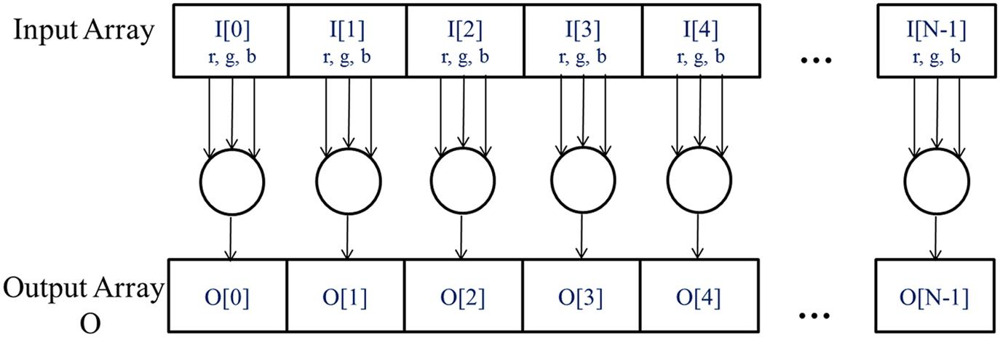
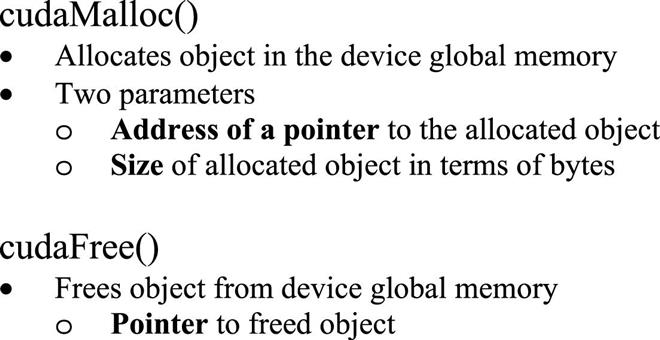
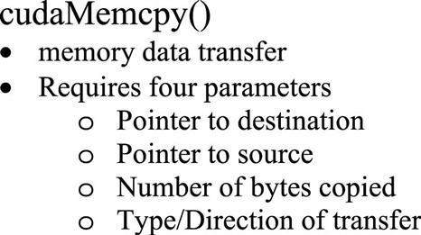
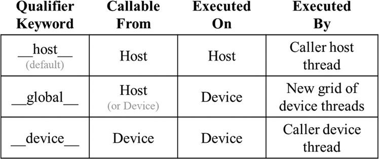
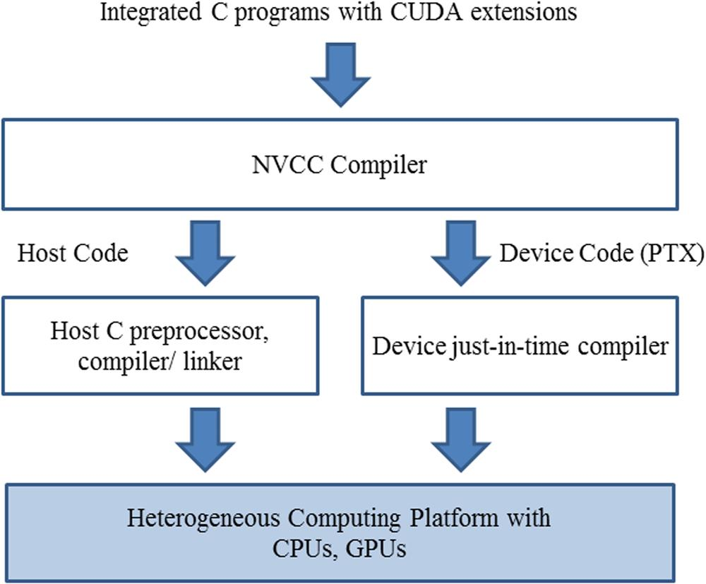

With special contribution from David Luebke
This chapter introduces the concept of data parallelism and the essential CUDA C features for writing a simple CUDA C program. It starts with the concept of threads, host, and device. It introduces CUDA device memory management and data transfer applications programming interface functions. It further introduces the basic structure of a CUDA C kernel function, built-in variables, function declaration keywords, and kernel launch syntax. It concludes with a brief overview of the compilation process for CUDA C programs.
Data parallelism; scalable parallel program; CUDA C; thread, kernel; applications programming interface (API); host code; device code; kernel call; grid launch; execution configuration parameters; memory allocation; data transfer; error handling; stub function; SPMD
Data parallelism refers to the phenomenon in which the computation work to be performed on different parts of the dataset can be done independently of each other and thus can be done in parallel with each other. Many applications exhibit a rich amount of data parallelism that makes them amenable to scalable parallel execution. It is therefore important for parallel programmers to be familiar with the concept of data parallelism and the parallel programming language constructs for writing code that exploit data parallelism. In this chapter we will use the CUDA C language constructs to develop a simple data parallel program.
When modern software applications run slowly, the problem is usually data—too much data to process. Image-processing applications manipulate images or videos with millions to trillions of pixels. Scientific applications model fluid dynamics using billions of grid points. Molecular dynamics applications must simulate interactions between thousands to billions of atoms. Airline scheduling deals with thousands of flights, crews, and airport gates. Most of these pixels, particles, grid points, interactions, flights, and so on can usually be dealt with largely independently. For example, in image processing, converting a color pixel to grayscale requires only the data of that pixel. Blurring an image averages each pixel’s color with the colors of nearby pixels, requiring only the data of that small neighborhood of pixels. Even a seemingly global operation, such as finding the average brightness of all pixels in an image, can be broken down into many smaller computations that can be executed independently. Such independent evaluation of different pieces of data is the basis of data parallelism. Writing data parallel code entails (re)organizing the computation around the data such that we can execute the resulting independent computations in parallel to complete the overall job faster—often much faster.
Let us illustrate the concept of data parallelism with a color-to-grayscale conversion example. Fig. 2.1 shows a color image (left side) consisting of many pixels, each containing a red, green, and blue fractional value (r, g, b) varying from 0 (black) to 1 (full intensity).
To convert the color image (left side of Fig. 2.1) to a grayscale image (right side), we compute the luminance value L for each pixel by applying the following weighted sum formula:
If we consider the input to be an image organized as an array I of RGB values and the output to be a corresponding array O of luminance values, we get the simple computation structure shown in Fig. 2.2. For example, O[0] is generated by calculating the weighted sum of the RGB values in I[0] according to the formula above; O[1] is generated by calculating the weighted sum of the RGB values in I[1]; O[2] is generated by calculating the weighted sum of the RGB values in I[2]; and so on. None of these per-pixel computations depend on each other. All of them can be performed independently. Clearly, color-to-grayscale conversion exhibits a rich amount of data parallelism. Of course, data parallelism in complete applications can be more complex, and much of this book is devoted to teaching the parallel thinking necessary to find and exploit data parallelism.

We are now ready to learn how to write a CUDA C program to exploit data parallelism for faster execution. CUDA C1 extends the popular ANSI C programming language with minimal new syntax and library functions to let programmers target heterogeneous computing systems containing both CPU cores and massively parallel GPUs. As the name implies, CUDA C is built on NVIDIA’s CUDA platform. CUDA is currently the most mature framework for massively parallel computing. It is broadly used in the high-performance computing industry, with essential tools such as compilers, debuggers, and profilers available on the most common operating systems.
The structure of a CUDA C program reflects the coexistence of a host (CPU) and one or more devices (GPUs) in the computer. Each CUDA C source file can have a mixture of host code and device code. By default, any traditional C program is a CUDA program that contains only host code. One can add device code into any source file. The device code is clearly marked with special CUDA C keywords. The device code includes functions, or kernels, whose code is executed in a data-parallel manner.
The execution of a CUDA program is illustrated in Fig. 2.3. The execution starts with host code (CPU serial code). When a kernel function is called, a large number of threads are launched on a device to execute the kernel. All the threads that are launched by a kernel call are collectively called a grid. These threads are the primary vehicle of parallel execution in a CUDA platform. Fig. 2.3 shows the execution of two grids of threads. We will discuss how these grids are organized soon. When all threads of a grid have completed their execution, the grid terminates, and the execution continues on the host until another grid is launched. Note that Fig. 2.3 shows a simplified model in which the CPU execution and the GPU execution do not overlap. Many heterogeneous computing applications manage overlapped CPU and GPU execution to take advantage of both CPUs and GPUs.
Launching a grid typically generates many threads to exploit data parallelism. In the color-to-grayscale conversion example, each thread could be used to compute one pixel of the output array O. In this case, the number of threads that ought to be generated by the grid launch is equal to the number of pixels in the image. For large images, a large number of threads will be generated. CUDA programmers can assume that these threads take very few clock cycles to generate and schedule, owing to efficient hardware support. This assumption contrasts with traditional CPU threads, which typically take thousands of clock cycles to generate and schedule. In the next chapter we will show how to implement color-to-grayscale conversion and image blur kernels. In the rest of this chapter we will use vector addition as a running example for simplicity.
We use vector addition to demonstrate the CUDA C program structure. Vector addition is arguably the simplest possible data parallel computation—the parallel equivalent of “Hello World” from sequential programming. Before we show the kernel code for vector addition, it is helpful to first review how a conventional vector addition (host code) function works. Fig. 2.4 shows a simple traditional C program that consists of a main function and a vector addition function. In all our examples, whenever there is a need to distinguish between host and device data, we will suffix the names of variables that are used by the host with “_h” and those of variables that are used by a device with “_d” to remind ourselves of the intended usage of these variables. Since we have only host code in Fig. 2.4, we see only variables suffixed with “_h”.
Assume that the vectors to be added are stored in arrays A and B that are allocated and initialized in the main program. The output vector is in array C, which is also allocated in the main program. For brevity we do not show the details of how A, B, and C are allocated or initialized in the main function. The pointers to these arrays are passed to the vecAdd function, along with the variable N that contains the length of the vectors. Note that the parameters of the vecAdd function are suffixed with “_h” to emphasize that they are used by the host. This naming convention will be helpful when we introduce device code in the next few steps.
The vecAdd function in Fig. 2.4 uses a for-loop to iterate through the vector elements. In the ith iteration, output element C_h[i] receives the sum of A_h[i] and B_h[i]. The vector length parameter n is used to control the loop so that the number of iterations matches the length of the vectors. The function reads the elements of A and B and writes the elements of C through the pointers A_h, B_h, and C_h, respectively. When the vecAdd function returns, the subsequent statements in the main function can access the new contents of C.
A straightforward way to execute vector addition in parallel is to modify the vecAdd function and move its calculations to a device. The structure of such a modified vecAdd function is shown in Fig. 2.5. Part 1 of the function allocates space in the device (GPU) memory to hold copies of the A, B, and C vectors and copies the A and B vectors from the host memory to the device memory. Part 2 calls the actual vector addition kernel to launch a grid of threads on the device. Part 3 copies the sum vector C from the device memory to the host memory and deallocates the three arrays from the device memory.
Note that the revised vecAdd function is essentially an outsourcing agent that ships input data to a device, activates the calculation on the device, and collects the results from the device. The agent does so in such a way that the main program does not need to even be aware that the vector addition is now actually done on a device. In practice, such a “transparent” outsourcing model can be very inefficient because of all the copying of data back and forth. One would often keep large and important data structures on the device and simply invoke device functions on them from the host code. For now, however, we will use the simplified transparent model to introduce the basic CUDA C program structure. The details of the revised function, as well as the way to compose the kernel function, will be the topic of the rest of this chapter.
In current CUDA systems, devices are often hardware cards that come with their own dynamic random-access memory called device global memory, or simply global memory. For example, the NVIDIA Volta V100 comes with 16GB or 32GB of global memory. Calling it “global” memory distinguishes it from other types of device memory that are also accessible to programmers. Details about the CUDA memory model and the different types of device memory are discussed in Chapter 5, Memory Architecture and Data Locality.
For the vector addition kernel, before calling the kernel, the programmer needs to allocate space in the device global memory and transfer data from the host memory to the allocated space in the device global memory. This corresponds to Part 1 of Fig. 2.5. Similarly, after device execution the programmer needs to transfer result data from the device global memory back to the host memory and free up the allocated space in the device global memory that is no longer needed. This corresponds to Part 3 of Fig. 2.5. The CUDA runtime system (typically running on the host) provides applications programming interface (API) functions to perform these activities on behalf of the programmer. From this point on, we will simply say that data is transferred from host to device as shorthand for saying that the data is copied from the host memory to the device global memory. The same holds for the opposite direction.
In Fig. 2.5, Part 1 and Part 3 of the vecAdd function need to use the CUDA API functions to allocate device global memory for A, B, and C; transfer A and B from host to device; transfer C from device to host after the vector addition; and free the device global memory for A, B, and C. We will explain the memory allocation and free functions first.
Fig. 2.6 shows two API functions for allocating and freeing device global memory. The cudaMalloc function can be called from the host code to allocate a piece of device global memory for an object. The reader should notice the striking similarity between cudaMalloc and the standard C runtime library malloc function. This is intentional; CUDA C is C with minimal extensions. CUDA C uses the standard C runtime library malloc function to manage the host memory2 and adds cudaMalloc as an extension to the C runtime library. By keeping the interface as close to the original C runtime libraries as possible, CUDA C minimizes the time that a C programmer spends relearning the use of these extensions.

The first parameter to the cudaMalloc function is the address of a pointer variable that will be set to point to the allocated object. The address of the pointer variable should be cast to (void **) because the function expects a generic pointer; the memory allocation function is a generic function that is not restricted to any particular type of objects.3 This parameter allows the cudaMalloc function to write the address of the allocated memory into the provided pointer variable regardless of its type.4 The host code that calls kernels passes this pointer value to the kernels that need to access the allocated memory object. The second parameter to the cudaMalloc function gives the size of the data to be allocated, in number of bytes. The usage of this second parameter is consistent with the size parameter to the C malloc function.
We now use the following simple code example to illustrate the use of cudaMalloc and cudaFree:
float *A_d
int size=n*sizeof(float);
cudaMalloc((void**)&A_d, size);…
cudaFree(A_d);
This is a continuation of the example in Fig. 2.5. For clarity we suffix a pointer variable with “_d” to indicate that it points to an object in the device global memory. The first argument passed to cudaMalloc is the address of pointer A_d (i.e., &A_d) casted to a void pointer. When cudaMalloc, returns, A_d will point to the device global memory region allocated for the A vector. The second argument passed to cudaMalloc is the size of the region to be allocated. Since size is in number of bytes, the programmer needs to translate from the number of elements in an array to the number of bytes when determining the value of size. For example, in allocating space for an array of n single-precision floating-point elements, the value of size would be n times the size of a single-precision floating number, which is 4 bytes in computers today. Therefore the value of size would be n*4. After the computation, cudaFree is called with pointer A_d as an argument to free the storage space for the A vector from the device global memory. Note that cudaFree does not need to change the value of A_d; it only needs to use the value of A_d to return the allocated memory back to the available pool. Thus only the value and not the address of A_d is passed as an argument.
The addresses in A_d, B_d, and C_d point to locations in the device global memory. These addresses should not be dereferenced in the host code. They should be used in calling API functions and kernel functions. Dereferencing a device global memory pointer in host code can cause exceptions or other types of runtime errors.
The reader should complete Part 1 of the vecAdd example in Fig. 2.5 with similar declarations of B_d and C_d pointer variables as well as their corresponding cudaMalloc calls. Furthermore, Part 3 in Fig. 2.5 can be completed with the cudaFree calls for B_d and C_d.
Once the host code has allocated space in the device global memory for the data objects, it can request that data be transferred from host to device. This is accomplished by calling one of the CUDA API functions. Fig. 2.7 shows such an API function, cudaMemcpy. The cudaMemcpy function takes four parameters. The first parameter is a pointer to the destination location for the data object to be copied. The second parameter points to the source location. The third parameter specifies the number of bytes to be copied. The fourth parameter indicates the types of memory involved in the copy: from host to host, from host to device, from device to host, and from device to device. For example, the memory copy function can be used to copy data from one location in the device global memory to another location in the device global memory.

The vecAdd function calls the cudaMemcpy function to copy the A_h and B_h vectors from the host memory to A_d and B_d in the device memory before adding them and to copy the C_d vector from the device memory to C_h in the host memory after the addition has been done. Assuming that the values of A_h, B_h, A_d, B_d, and size have already been set as we discussed before, the three cudaMemcpy calls are shown below. The two symbolic constants, cudaMemcpyHostToDevice and cudaMemcpyDeviceToHost, are recognized, predefined constants of the CUDA programming environment. Note that the same function can be used to transfer data in both directions by properly ordering the source and destination pointers and using the appropriate constant for the transfer type.
cudaMemcpy(A_d, A_h, size, cudaMemcpyHostToDevice);
cudaMemcpy(B_d, B_h, size, cudaMemcpyHostToDevice);
…
cudaMemcpy(C_h, C_d, size, cudaMemcpyDeviceToHost);
To summarize, the main program in Fig. 2.4 calls vecAdd, which is also executed on the host. The vecAdd function, outlined in Fig. 2.5, allocates space in device global memory, requests data transfers, and calls the kernel that performs the actual vector addition. We refer to this type of host code as a stub for calling a kernel. We show a more complete version of the vecAdd function in Fig. 2.8.
Compared to Fig. 2.5, the vecAdd function in Fig. 2.8 is complete for Part 1 and Part 3. Part 1 allocates device global memory for A_d, B_d, and C_d and transfers A_h to A_d and B_h to B_d. This is done by calling the cudaMalloc and cudaMemcpy functions. The readers are encouraged to write their own function calls with the appropriate parameter values and compare their code with that shown in Fig. 2.8. Part 2 calls the kernel and will be described in the following subsection. Part 3 copies the vector sum data from the device to the host so that the values will be available in the main function. This is accomplished with a call to the cudaMemcpy function. It then frees the memory for A_d, B_d, and C_d from the device global memory, which is done by calls to the cudaFree function (Fig. 2.9).
We are now ready to discuss more about the CUDA C kernel functions and the effect of calling these kernel functions. In CUDA C, a kernel function specifies the code to be executed by all threads during a parallel phase. Since all these threads execute the same code, CUDA C programming is an instance of the well-known single-program multiple-data (SPMD) (Atallah, 1998) parallel programming style, a popular programming style for parallel computing systems.5
When a program’s host code calls a kernel, the CUDA runtime system launches a grid of threads that are organized into a two-level hierarchy. Each grid is organized as an array of thread blocks, which we will refer to as blocks for brevity. All blocks of a grid are of the same size; each block can contain up to 1024 threads on current systems.6 Fig. 2.9 shows an example in which each block consists of 256 threads. Each thread is represented by a curly arrow stemming from a box that is labeled with the thread’s index number in the block.
The total number of threads in each thread block is specified by the host code when a kernel is called. The same kernel can be called with different numbers of threads at different parts of the host code. For a given grid of threads, the number of threads in a block is available in a built-in variable named blockDim. The blockDim variable is a struct with three unsigned integer fields (x, y, and z) that help the programmer to organize the threads into a one-, two-, or three-dimensional array. For a one-dimensional organization, only the x field is used. For a two-dimensional organization, the x and y fields are used. For a three-dimensional structure, all three x, y, and z fields are used. The choice of dimensionality for organizing threads usually reflects the dimensionality of the data. This makes sense because the threads are created to process data in parallel, so it is only natural that the organization of the threads reflects the organization of the data. In Fig. 2.9, each thread block is organized as a one-dimensional array of threads because the data are one-dimensional vectors. The value of the blockDim.x variable indicates the total number of threads in each block, which is 256 in Fig. 2.9. In general, it is recommended that the number of threads in each dimension of a thread block be a multiple of 32 for hardware efficiency reasons. We will revisit this later.
CUDA kernels have access to two more built-in variables (threadIdx and blockIdx) that allow threads to distinguish themselves from each other and to determine the area of data each thread is to work on. The threadIdx variable gives each thread a unique coordinate within a block. In Fig. 2.9, since we are using a one-dimensional thread organization, only threadIdx.x is used. The threadIdx.x value for each thread is shown in the small shaded box of each thread in Fig. 2.9. The first thread in each block has value 0 in its threadIdx.x variable, the second thread has value 1, the third thread has value 2, and so on.
The blockIdx variable gives all threads in a block a common block coordinate. In Fig. 2.9, all threads in the first block have value 0 in their blockIdx.x variables, those in the second thread block value 1, and so on. Using an analogy with the telephone system, one can think of threadIdx.x as local phone number and blockIdx.x as area code. The two together gives each telephone line in the whole country a unique phone number. Similarly, each thread can combine its threadIdx and blockIdx values to create a unique global index for itself within the entire grid.
In Fig. 2.9 a unique global index i is calculated as i=blockIdx.x * blockDim.x + threadIdx.x. Recall that blockDim is 256 in our example. The i values of threads in block 0 range from 0 to 255. The i values of threads in block 1 range from 256 to 511. The i values of threads in block 2 range from 512 to 767. That is, the i values of the threads in these three blocks form a continuous coverage of the values from 0 to 767. Since each thread uses i to access A, B, and C, these threads cover the first 768 iterations of the original loop. By launching a grid with a larger number of blocks, one can process larger vectors. By launching a grid with n or more threads, one can process vectors of length n.
Fig. 2.10 shows a kernel function for vector addition. Note that we do not use the “_h” and “_d” convention in kernels, since there is no potential confusion. We will not have any access to the host memory in our examples. The syntax of a kernel is ANSI C with some notable extensions. First, there is a CUDA-C-specific keyword “__global__” in front of the declaration of the vecAddKernel function. This keyword indicates that the function is a kernel and that it can be called to generate a grid of threads on a device.
In general, CUDA C extends the C language with three qualifier keywords that can be used in function declarations. The meaning of these keywords is summarized in Fig. 2.11. The “__global__” keyword indicates that the function being declared is a CUDA C kernel function. Note that there are two underscore characters on each side of the word “global.” Such a kernel function is executed on the device and can be called from the host. In CUDA systems that support dynamic parallelism, it can also be called from the device, as we will see in Chapter 21, CUDA Dynamic Parallelism. The important feature is that calling such a kernel function results in a new grid of threads being launched on the device.

The “__device__” keyword indicates that the function being declared is a CUDA device function. A device function executes on a CUDA device and can be called only from a kernel function or another device function. The device function is executed by the device thread that calls it and does not result in any new device threads being launched.7
The “__host__” keyword indicates that the function being declared is a CUDA host function. A host function is simply a traditional C function that executes on the host and can be called only from another host function. By default, all functions in a CUDA program are host functions if they do not have any of the CUDA keywords in their declaration. This makes sense, since many CUDA applications are ported from CPU-only execution environments. The programmer would add kernel functions and device functions during the porting process. The original functions remain as host functions. Having all functions to default into host functions spares the programmer the tedious work of changing all original function declarations.
Note that one can use both “__host__” and “__device__” in a function declaration. This combination tells the compilation system to generate two versions of object code for the same function. One is executed on the host and can be called only from a host function. The other is executed on the device and can be called only from a device or kernel function. This supports a common use case when the same function source code can be recompiled to generate a device version. Many user library functions will likely fall into this category.
The second notable extension to C, in Fig. 2.10, is the built-in variables “threadIdx,” “blockIdx,” and “blockDim.” Recall that all threads execute the same kernel code and there needs to be a way for them to distinguish themselves from each other and direct each thread toward a particular part of the data. These built-in variables are the means for threads to access hardware registers that provide the identifying coordinates to threads. Different threads will see different values in their threadIdx.x, blockIdx.x, and blockDim.x variables. For readability we will sometimes refer to a thread as threadblockIdx.x, threadIdx.x in our discussions.
There is an automatic (local) variable i in Fig. 2.10. In a CUDA kernel function, automatic variables are private to each thread. That is, a version of i will be generated for every thread. If the grid is launched with 10,000 threads, there will be 10,000 versions of i, one for each thread. The value assigned by a thread to its i variable is not visible to other threads. We will discuss these automatic variables in more details in Chapter 5, Memory Architecture and Data Locality.
A quick comparison between Fig. 2.4 and Fig. 2.10 reveals an important insight into CUDA kernels. The kernel function in Fig. 2.10 does not have a loop that corresponds to the one in Fig. 2.4. The reader should ask where the loop went. The answer is that the loop is now replaced with the grid of threads. The entire grid forms the equivalent of the loop. Each thread in the grid corresponds to one iteration of the original loop. This is sometimes referred to as loop parallelism, in which iterations of the original sequential code are executed by threads in parallel.
Note that there is an if (i<n) statement in addVecKernel in Fig. 2.10. This is because not all vector lengths can be expressed as multiples of the block size. For example, let’s assume that the vector length is 100. The smallest efficient thread block dimension is 32. Assume that we picked 32 as block size. One would need to launch four thread blocks to process all the 100 vector elements. However, the four thread blocks would have 128 threads. We need to disable the last 28 threads in thread block 3 from doing work not expected by the original program. Since all threads are to execute the same code, all will test their i values against n, which is 100. With the if (i<n) statement, the first 100 threads will perform the addition, whereas the last 28 will not. This allows the kernel to be called to process vectors of arbitrary lengths.
Having implemented the kernel function, the remaining step is to call that function from the host code to launch the grid. This is illustrated in Fig. 2.12. When the host code calls a kernel, it sets the grid and thread block dimensions via execution configuration parameters. The configuration parameters are given between the “<<<” and “>>>” before the traditional C function arguments. The first configuration parameter gives the number of blocks in the grid. The second specifies the number of threads in each block. In this example there are 256 threads in each block. To ensure that we have enough threads in the grid to cover all the vector elements, we need to set the number of blocks in the grid to the ceiling division (rounding up the quotient to the immediate higher integer value) of the desired number of threads (n in this case) by the thread block size (256 in this case). There are many ways to perform a ceiling division. One way is to apply the C ceiling function to n/256.0. Using the floating-point value 256.0 ensures that we generate a floating value for the division so that the ceiling function can round it up correctly. For example, if we want 1000 threads, we would launch ceil(1000/256.0)=4 thread blocks. As a result, the statement will launch 4×256=1024 threads. With the if (i < n) statement in the kernel as shown in Fig. 2.10, the first 1000 threads will perform addition on the 1000 vector elements. The remaining 24 will not.
Fig. 2.13 shows the final host code in the vecAdd function. This source code completes the skeleton in Fig. 2.5. Figs. 2.12 and 2.13 jointly illustrate a simple CUDA program that consists of both host code and a device kernel. The code is hardwired to use thread blocks of 256 threads each.8 However, the number of thread blocks used depends on the length of the vectors (n). If n is 750, three thread blocks will be used. If n is 4000, 16 thread blocks will be used. If n is 2,000,000, 7813 blocks will be used. Note that all the thread blocks operate on different parts of the vectors. They can be executed in any arbitrary order. The programmer must not make any assumptions regarding execution order. A small GPU with a small amount of execution resources may execute only one or two of these thread blocks in parallel. A larger GPU may execute 64 or 128 blocks in parallel. This gives CUDA kernels scalability in execution speed with hardware. That is, the same code runs at lower speed on small GPUs and at higher speed on larger GPUs. We will revisit this point in Chapter 4, Compute Architecture and Scheduling.
It is important to point out again that the vector addition example is used for its simplicity. In practice, the overhead of allocating device memory, input data transfer from host to device, output data transfer from device to host, and deallocating device memory will likely make the resulting code slower than the original sequential code in Fig. 2.4. This is because the amount of calculation that is done by the kernel is small relative to the amount of data processed or transferred. Only one addition is performed for two floating-point input operands and one floating-point output operand. Real applications typically have kernels in which much more work is needed relative to the amount of data processed, which makes the additional overhead worthwhile. Real applications also tend to keep the data in the device memory across multiple kernel invocations so that the overhead can be amortized. We will present several examples of such applications.
We have seen that implementing CUDA C kernels requires using various extensions that are not part of C. Once these extensions have been used in the code, it is no longer acceptable to a traditional C compiler. The code needs to be compiled by a compiler that recognizes and understands these extensions, such as NVCC (NVIDIA C compiler). As is shown at the top of Fig. 2.14, the NVCC compiler processes a CUDA C program, using the CUDA keywords to separate the host code and device code. The host code is straight ANSI C code, which is compiled with the host’s standard C/C++ compilers and is run as a traditional CPU process. The device code, which is marked with CUDA keywords that designate CUDA kernels and their associated helper functions and data structures, is compiled by NVCC into virtual binary files called PTX files. These PTX files are further compiled by a runtime component of NVCC into the real object files and executed on a CUDA-capable GPU device.

This chapter provided a quick, simplified overview of the CUDA C programming model. CUDA C extends the C language to support parallel computing. We discussed an essential subset of these extensions in this chapter. For your convenience we summarize the extensions that we have discussed in this chapter as follows:
CUDA C extends the C function declaration syntax to support heterogeneous parallel computing. The extensions are summarized in Fig. 2.12. Using one of “__global__,” “__device__,” or “__host__,” a CUDA C programmer can instruct the compiler to generate a kernel function, a device function, or a host function. All function declarations without any of these keywords default to host functions. If both “__host__” and “_device__” are used in a function declaration, the compiler generates two versions of the function, one for the device and one for the host. If a function declaration does not have any CUDA C extension keyword, the function defaults into a host function.
CUDA C extends the C function call syntax with kernel execution configuration parameters surrounded by <<< and >>>. These execution configuration parameters are only used when calling a kernel function to launch a grid. We discussed the execution configuration parameters that define the dimensions of the grid and the dimensions of each block. The reader should refer to the CUDA Programming Guide (NVIDIA, 2021) for more details of the kernel launch extensions as well as other types of execution configuration parameters.
CUDA kernels can access a set of built-in, predefined read-only variables that allow each thread to distinguish itself from other threads and to determine the area of data to work on. We discussed the threadIdx, blockDim, and blockIdx variables in this chapter. In Chapter 3, Multidimensional Grids and Data, we will discuss more details of using these variables.
CUDA supports a set of API functions to provide services to CUDA C programs. The services that we discussed in this chapter are cudaMalloc, cudaFree, and cudaMemcpy functions. These functions are called by the host code to allocate device global memory, deallocate device global memory, and transfer data between host and device on behalf of the calling program, respectively. The reader is referred to the CUDA C Programming Guide for other CUDA API functions.
Our goal for this chapter is to introduce the core concepts of CUDA C and the essential CUDA extensions to C for writing a simple CUDA C program. The chapter is by no means a comprehensive account of all CUDA features. Some of these features will be covered in the remainder of the book. However, our emphasis will be on the key parallel computing concepts that are supported by these features. We will introduce only the CUDA C features that are needed in our code examples for parallel programming techniques. In general, we would like to encourage the reader to always consult the CUDA C Programming Guide for more details of the CUDA C features.
01 __global__ void foo_kernel(float* a, float* b, unsigned int N){02 unsigned int i=blockIdx.x*blockDim.x + threadIdx.x;
03 if(i < N) {04 b[i]=2.7f*a[i] - 4.3f;
05 }
06 }
07 void foo(float* a_d, float* b_d) {
08 unsigned int N=200000;
09 foo_kernel <<< (N + 128–1)/128, 128 >>>(a_d, b_d, N);